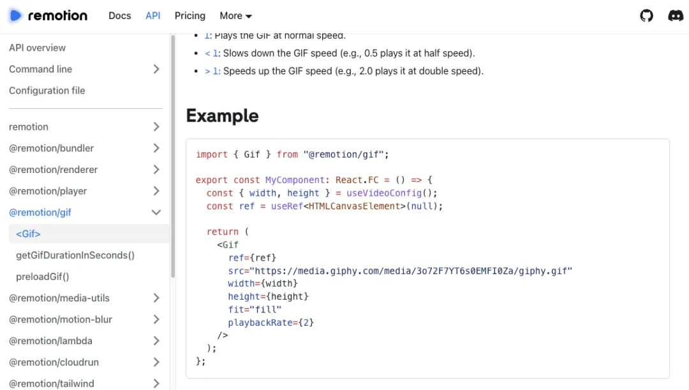

前端工程师们，有一个好消息 Remotion 这个神奇的框架可以彻底改变你的视频制作方式！
如果你已经熟悉React，那么现在你可以通过它轻松创建高质量的视频了。这不仅是一个视频编辑工具，更是将编程和 Web 技术融入视频创作的新途径。
你可能会问：既然有这么多现成的视频编辑软件，为什么还要用 React 来创建视频呢？答案很简单，Remotion 让你可以用编程的思维来控制视频的每一个细节，而这正是传统视频软件所无法企及的。
当然局限也是普遍小白上手难度是巨大的。
(1) 利用 Web 技术
使用 Web 技术创作视频让你的创作更为灵活。你可以使用 CSS 来控制样式，用 Canvas 实现复杂的动画效果，用 SVG 绘制矢量图形，甚至可以用 WebGL 创作出令人惊叹的 3D 图像。
想象一下，将网页开发中的一切技术都应用到视频制作中，这种可能性有多大？
(2) 利用编程的力量
使用代码来操控视频，这听起来是不是有点酷？通过编程，你可以随意控制视频的每一个细节，例如利用变量和函数来动态生成内容，或者通过 API 来抓取实时数据并直接展示在视频中。
编程不再只是写代码的工具，它在 Remotion 中变成了创作的魔杖。
(3) 利用 React 的优势
React 的组件化让你可以将复杂的界面拆解成一个个可重用的组件，而在视频制作中，组件同样有用！你可以轻松地将不同的视频片段封装成组件，然后自由组合，创造出更加灵活的视频效果。
再加上 React 的快速刷新功能，你在编辑视频时可以像调试网页一样，即时预览效果。
Remotion 不是简单的动画工具，它能让你生成真实的 MP4 视频，并且包含音频支持。所有的帧都会被渲染为图像，然后编码为视频格式。你不仅可以生成 MP4，还能支持 WebM 等其他格式，确保输出的灵活性。
最重要的是，Remotion 提供了一个浏览器预览功能，让你在开发过程中可以实时查看视频效果。你可以像在剪辑软件里一样，拖动时间轴，精确地调试每一帧画面。再也不用导出视频后才发现错误，你能实时调整，节省大量时间。
一个大亮点是，Remotion 支持从 API 获取数据并将其直接用作视频内容。这意味着你可以动态生成视频。
例如自动将某个 API 数据展示在视频中，或根据用户输入生成个性化的视频。这种互动性在传统视频制作中是无法实现的，但通过编程，它变得轻而易举。
上手 Remotion 非常简单，只要你会 React 和 Node.js。执行以下命令，几分钟内你就能开始编写自己的视频了：
npx create-video@latest
安装完成后，你可以在浏览器中预览并编辑视频。再也不用忍受复杂的传统视频制作工具，使用代码一切都变得简洁高效。
作为一款开源项目，Remotion 的开发者社区非常活跃，功能也在不断更新和扩展。它打破了视频制作的界限，将编程与多媒体结合，创造出前所未有的可能性。
对于前端开发者来说，Remotion 不仅是一个有趣的玩具，更是一个实用的工具。你可以用它为公司制作宣传视频、为项目生成动态内容，甚至可以将数据可视化以视频的形式呈现出来。